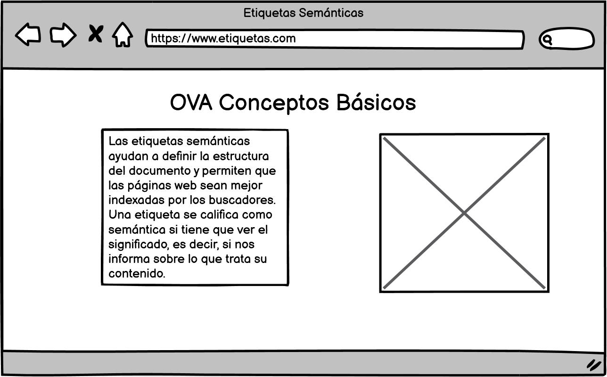
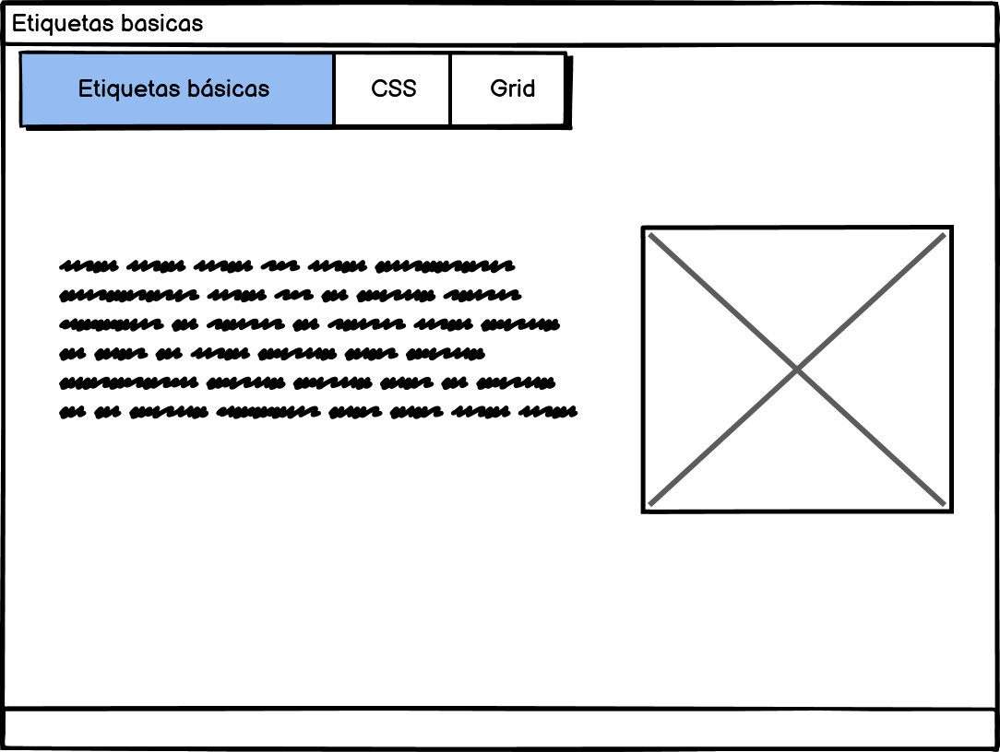

El proposito de este sitio es ayudar a definir la estrctura del documento que permiten
que las paginas web sean mejor indexadas por los buscadores.
Etiquetas Semanticas
 >
Las etiquetas semánticas ayudan a definir la estructura del documento
y permiten que las páginas web sean mejor indexadas por los buscadores.
Una etiqueta se califica como semántica si tiene que ver el significado, es decir,
si nos informa sobre lo que trata su contenido.
Arias, M. P. B. (2010). El uso de etiquetas semánticas en los artículos lexicográficos
de verbos en el DAELE. Quaderns de Filologia-Estudis Lingüístics, 15, 139-158.
CSS Grid

El proyecto aborda la implementación de una serie de tecnologías y rediseños que modificaran
y mejoraran de forma sustancial un blog realizado en WordPress, se trata del blog de la asignatura
"Lenguajes y estándares web". Los objetivos del proyecto son claros, realizar un rediseño que permita
a un blog de Wordpress utilizar un sistema de diseño basado en CSS Grid, es decir que la interfaz siga
una estructura de rejilla e implementar algunas características de las Progressive web app (PWA) para
hacerlo más rápido, eficiente y a la vez responsable.
Murillo Ruiz, J. Rediseño de un blog Wordpress implementando CSS GRID y PWA.